Solettificio dal 1970 · Villatora di Saonara (PD)
Sottopiedi per calzature da uomo, da donna e da bambino
Per i calzaturifici: li progettiamo sulla forma del vostro modello, li tagliamo e li garbiamo in via Irpinia 15, a Villatora di Saonara.
Via Irpinia 15, Zona Artigianale, 35020 Villatora di Saonara (PD), indicazioni. Per ritiri e consegne chiamate prima di passare.
Per una campionatura si parte dalla forma del vostro modello: scriveteci tipo, materiale, numerata e quantità.
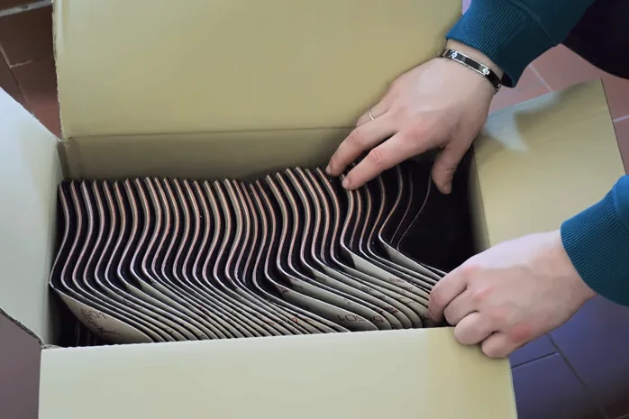
I nostri sottopiedi
Nove tipi dal nostro catalogo. Ognuno si progetta sulla forma del vostro modello: toccate un tipo per chiederlo.
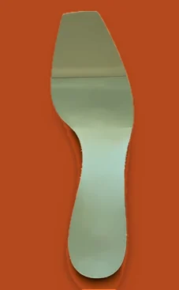
Sottopiede con Ocram schiuma e puntina in Texon
Chiedete questo tipo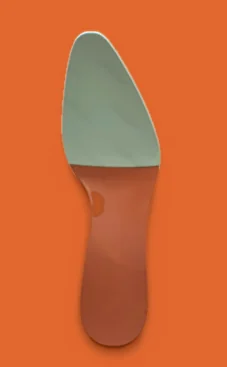
Sottopiede con materiale Adhegel traspirante
Chiedete questo tipo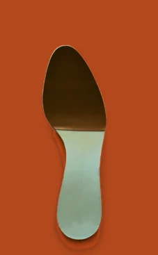
Sottopiede con tessuto sintetico in pianta
Chiedete questo tipo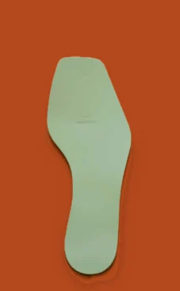
Sottopiede in vero cuoio
Chiedete questo tipo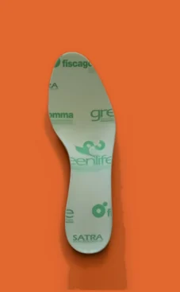
Sottopiede con antibatterico Greenlife
Chiedete questo tipo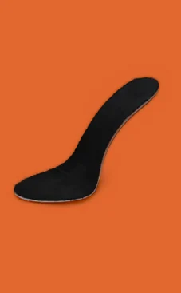
Sottopiede con lana intera
Chiedete questo tipo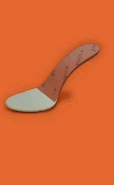
Sottopiede con fisca in pianta
Chiedete questo tipo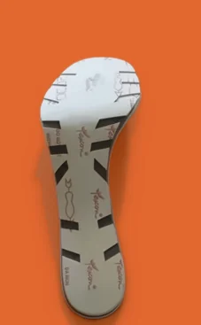
Sottopiede per sandalo con incastri a ragno
Chiedete questo tipo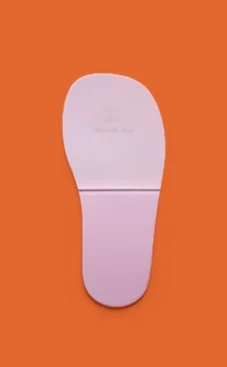
Sottopiede per bambino in soffice lattice
Chiedete questo tipo
Materiali
Cuoio, schiuma di lattice, pelle, gommapiuma, lana, tessuto sintetico e antibatterico.
Non solo sottopiedi
Tagliamo anche suole, puntali, contrafforti e tallonette, su cellulosico accoppiato, cartone fibrato, pelle e cuoio.
Quattro reparti sotto lo stesso tetto
Dal disegno sulla forma alla scatola chiusa, ogni passaggio si fa in via Irpinia 15.
-
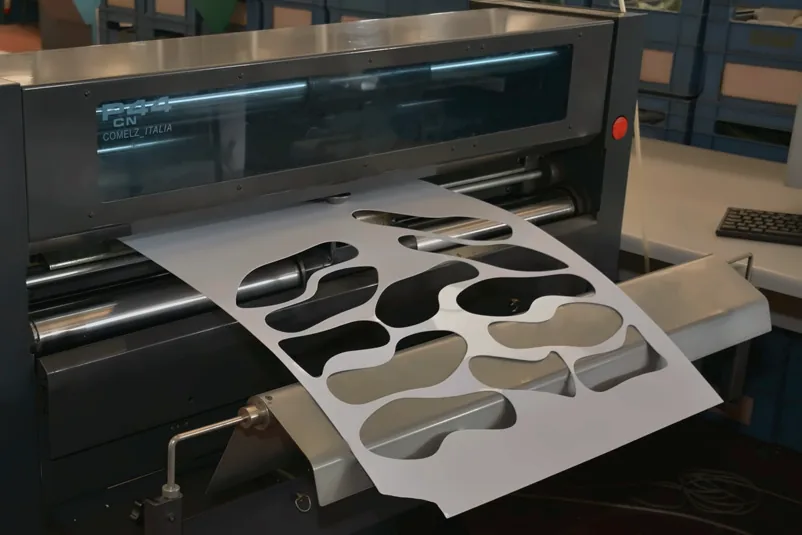
Reparto 1
Studio modelleria
La progettazione parte dalle caratteristiche della forma del modello: la sagoma della parte inferiore, le curvature. Modelli, prototipi e campioni con i programmi CAD/CAM per calzature.
-
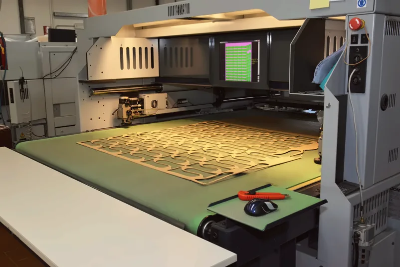
Reparto 2
Lavorazione automatizzata
Le trance CAD/CAM computerizzate tagliano ogni singolo pezzo. Il taglio a punzone e la lama oscillante garantiscono alta produttività e flessibilità.
-
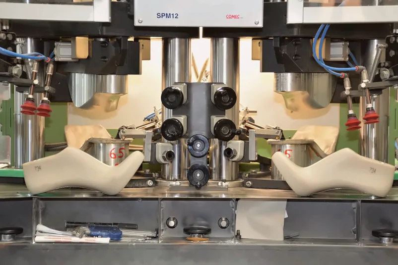
Reparto 3
Cambratura
Ogni sottopiede è garbato in modo progressivo, in modo da evitare la formazione di grinze. Macchinari automatici e numerosi stampi per le varie sagomature.
-
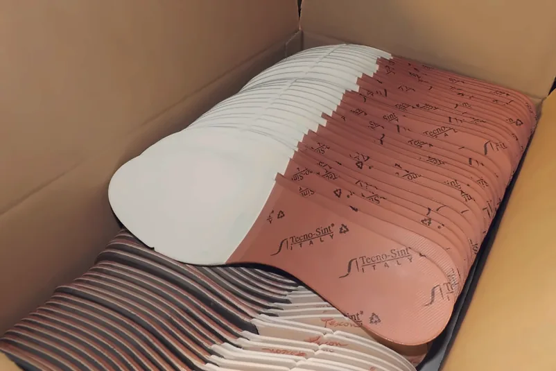
Reparto 4
Supervisione
I prodotti sono controllati minuziosamente dal personale e dai titolari prima di essere consegnati ai clienti.
- Le macchine
- Comelz CNplotter della modelleria
- Comelz CM44Stranciatrice CAD/CAM
- Comec SPM12pressa per la cambratura
Azienda
Dal 1970, a conduzione familiare
La nostra azienda nasce nel 1970 come piccola realtà a conduzione familiare. Uniamo la tradizione artigianale e l’alta tecnologia della nostra struttura, per un prodotto di qualità rigorosamente Made in Italy.
Una consegna puntuale in tempi rapidi e un ottimo rapporto qualità-prezzo.
- 1970l’anno in cui nasce l’azienda
- 12persone in azienda
- 4reparti sotto lo stesso tetto
- 9tipi di sottopiede in catalogo
- 7materiali, dal cuoio alla lana
- 4altri tagli: suole, puntali, contrafforti, tallonette
Richiesta di campionatura
Ogni sottopiede parte dalla forma del vostro modello. Scriveteci il tipo, il materiale, la numerata e le quantità; per la forma o il file del modello, chiedeteci al telefono come mandarli.
- Telefono
- 049 640620
- Dall’estero
- +39 049 640620
- info@tollin.it
- Fax
- 049 644643
Dove siamo
Via Irpinia 15, Zona Artigianale35020 Villatora di Saonara (PD)
- Orari
- Per ritiri e consegne chiamate prima di passare.
- Consegne
- Con il nostro furgone: una consegna puntuale in tempi rapidi.
- info@tollin.it
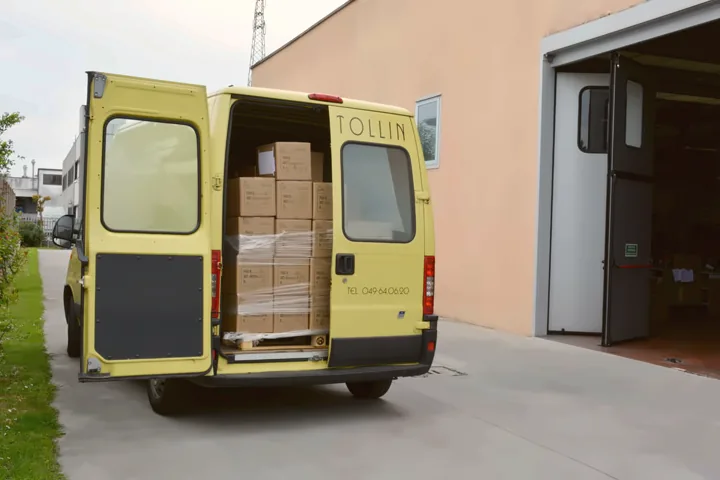